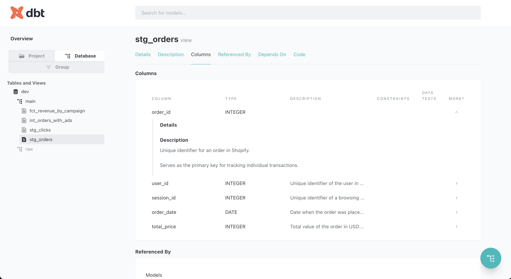
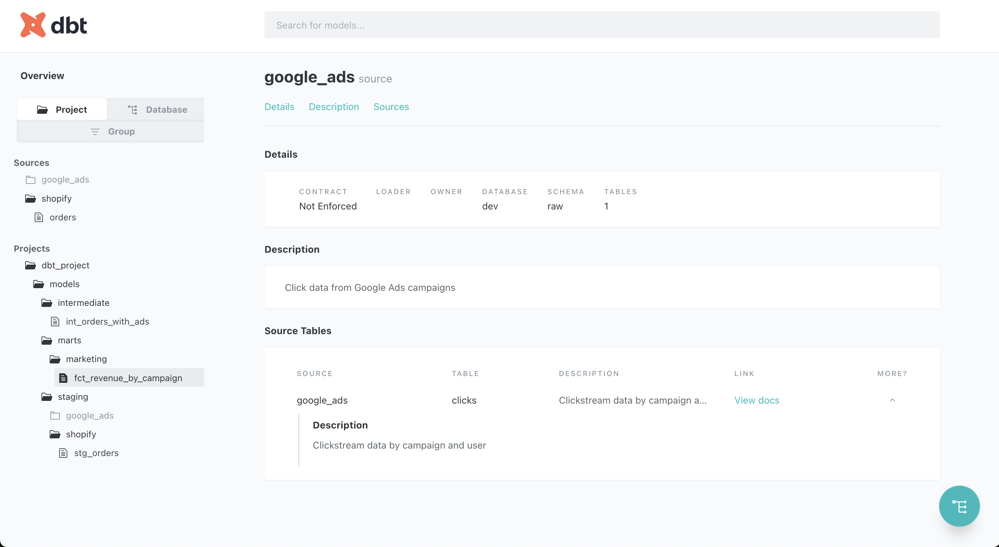

Whether you’re a solo analytics engineer or part of a large data team, documentation is often an afterthought in data projects, but in dbt, it’s a first-class citizen that can dramatically improve your team’s understanding and efficiency.
dbt (data build tool) is a popular open-source framework for transforming raw data in your warehouse with SQL and maintaining modular, testable pipelines.
Who this guide is for:
- Analytics engineers using dbt for data transformation
- Data engineers establishing documentation standards
- Data team leads looking to improve team collaboration
- Anyone transitioning from ad-hoc SQL to dbt pipelines
This guide walks you through creating comprehensive, meaningful documentation for your dbt projects, with practical examples from real-world implementations.
Why Documentation Matters in dbt
Documentation in dbt isn’t just about writing descriptions; it’s about creating a living, breathing map of your data transformations. Good documentation:
- Provides clarity on data lineage - Traces data from source to consumption
- Helps new team members understand complex transformations - Reduces onboarding time
- Acts as a self-service resource for analysts and stakeholders - Reduces ad-hoc questions
- Supports data governance and compliance efforts - Critical for regulated industries
- Improves data quality - Well-documented data is typically better understood and maintained
Here’s an example of before/after documentation:
Before documentation - Hard to understand the purpose and relationships:
version: 2
models:
- name: order_items
columns:
- name: id
- name: order_id
- name: product_id
- name: quantity
- name: priceAfter documentation - Clear purpose and relationships:
models:
- name: order_items
description: >
Individual line items within customer orders.
One order can have multiple items.
columns:
- name: id
description: Surrogate key, format 'oi_[order_id]_[product_id]'
data_type: INTEGER
tests:
- unique
- not_null
- name: order_id
description: Foreign key to orders table
data_type: INTEGER
tests:
- relationships:
to: ref('orders')
field: order_id
- name: product_id
description: Foreign key to products table
data_type: INTEGER
tests:
- relationships:
to: ref('products')
field: product_id
- name: quantity
description: Number of units purchased (integer)
data_type: INTEGER
- name: price
description: Price per unit in USD at time of purchase
data_type: FLOATIt’s pretty straightforward that the second example is way more convenient for both technical and non-technical users to have as much information as possible regarding the order_items model and its columns.
Documentation Strategies in dbt
1. Column-Level Documentation
Use .md files to document individual columns with precise, informative descriptions. It’s pretty useful because each time I want to document the order_id column in different models I can use the {{ doc() }} function (more information on dbt documentation).
columns:
- name: order_id
description: '{{ doc("order_id") }}'
data_type: STRINGHere’s an example based on our orders.md on how to document using Markdown:
{% docs order_id %}
Unique identifier for each order in the Shopify system.
Primary key for tracking individual transactions.
{% enddocs %}
{% docs session_id %}
Unique identifier of a browsing session in Shopify.
Helps link multiple user interactions (e.g., page views, cart additions) within the same visit.
{% enddocs %}When to use {{ doc() }} vs inline description?
- Use
{{ doc() }}when you have reusable documentation blocks that appear in multiple models or columns (e.g.,order_id,customer_id). This avoids duplication and keeps your docs DRY (Don’t Repeat Yourself). - Use inline
description:when the context is unique to that specific model or column. For example, a calculated metric that only appears once, or something highly contextual to a particular dataset.
An example of how it looks in the dbt docs UI

Best Practices:
- Be specific about the column’s purpose
- Explain any calculations or transformations
- Mention the data type and format
- Provide context about the source system
- Document business rules affecting the data
✅ Good vs. ❌ Bad Description Examples
Bad:
{% docs total_price %}
Order amount
{% enddocs %}❌ Too vague — it doesn’t explain what is included in the amount, what currency is used, or where it comes from.
Good:
{% docs total_price %}
Total monetary value of the order in USD.
Includes the cost of all items, taxes, discounts, and shipping fees.
{% enddocs %}✅ Clear, specific, and informative. Includes data type, units, and all components included in the total.
NOTE
In the rest of the tutorial I describe directly the column or models in the yaml to give context information but in the repository I’m using doc blocks.
2. Model-Level Documentation
In your schema.yml files, add descriptions that explain the purpose and transformation logic of each model:
version: 2
models:
- name: fct_revenue_by_campaign
description: >
Aggregates order details with campaign information to provide a comprehensive view of campaign performance. Used by marketing team to evaluate ROI on campaigns and optimize budget allocation.
columns:
- name: campaign_id
description: Unique identifier for marketing campaigns
data_type: INTEGER
- name: orders_count
description: Number of distinct orders attributed to each campaign
data_type: INTEGER
tests:
- not_nullBest Practices:
- Describe the model’s business purpose, not just its technical function
- Explain any complex joins or transformations
- Link related models or sources
- Add tests to validate data quality
- Include information about who uses the model and for what purpose
3. Enhancing Model Documentation with meta and tags
In addition to writing good descriptions, dbt allows you to enrich your models with metadata and classification using the meta and tags fields in your schema.yml files.
Use tags to categorize models
Tags help you classify models by domain, purpose, or team ownership. You can filter and search by tags in the dbt Docs UI, or use them in automation workflows like CI/CD, testing, or documentation generation.
Examples:
`tags: ["marketing", "finance", "core_data", "daily_refresh"]`Use meta for structured metadata
The meta field allows you to store additional model-level information that can be used internally or by external tools like data catalogs and dashboards. This structured metadata can improve documentation and enable automation.
Useful fields to include:
meta:
owner: "marketing_analytics"
data_owner: "jane.smith@company.com"
refreshed: "daily"
upstream_sources: ["shopify", "google_analytics"]
related_dashboards: ["marketing_campaign_overview", "executive_summary"]
contains_pii: false
sla_hours: 4
maturity: "production" # vs. "development" or "deprecated"You can include any custom key-value pairs relevant to your team. Some use cases:
- Identifying model owners for alerts or governance
- Indicating data maturity (development, production, deprecated)
- PII identification for compliance
- SLA requirements for monitoring
- Related business processes or dashboards
For more information, see the dbt official documentation on meta fields.
4. Source Documentation
Document your source tables to provide transparency about raw data:
version: 2
sources:
- name: shopify
description: >
Raw e-commerce data from Shopify platform.
Data is loaded via Fivetran connector with 15-minute sync frequency.
tables:
- name: orders
description: Contains all customer order transactions
columns:
- name: order_id
description: Unique identifier for Shopify orders
data_type: INTEGER
tests:
- unique
- not_null
- name: customer_id
description: Reference to the customer who placed the order
data_type: INTEGER
- name: created_at
description: Timestamp when the order was created in UTC
data_type: TIMESTAMP
- name: total_amount
description: Total order amount in USD
data_type: FLOATAn example of documented source below:

5. Documenting Tests
Tests are a critical part of data quality, and documenting their purpose helps team members understand expectations for the data.
version: 2
models:
- name: customers
description: Deduplicated customer records from multiple sources
columns:
- name: customer_id
description: Unique identifier for each customer
data_type: INTEGER
tests:
- unique:
severity: error
meta:
description: "Each customer should appear exactly once in this table"
- relationships:
to: ref('orders')
field: customer_id
meta:
description: "All customers should have at least one order"Advanced Documentation Techniques
Documentation Generation & Hosting
Use dbt docs generate to create interactive documentation:
# Generate documentation
dbt docs generate
# Serve documentation locally
dbt docs serve --port 8080This creates a web interface at http://localhost:8080 where team members can explore your entire data model.
Hosting Options for Production
Since the website generated by dbt docs generate is a static website, these hosting options are perfect for production environments:
- Static Site Hosting:
- Amazon S3 + CloudFront (or equivalent on GCP / Azure)
- GitHub Pages
- Netlify or Vercel
- Internal Knowledge Base - Embed within internal wikis like Confluence
Another tutorial will be published soon in order to explain how you could deploy the dbt documentation on GitHub Pages.
Automating Documentation with Jinja
You can leverage dbt’s Jinja templating for dynamic documentation:
{% docs payment_method %}
Payment method used for the transaction.
Valid values:
{% for method in ['credit_card', 'debit_card', 'paypal', 'gift_card', 'store_credit'] %}
- {{ method }}
{% endfor %}
{% if is_incremental() %}
Note: This model is built incrementally.
{% endif %}
{% enddocs %}You can also use built-in ref Jinja function to show the dependencies:
models:
- name: fct_orders
description: >
Fact table containing order transactions.
**Related Models:**
- Dimension tables: {{ ref('dim_customers') }}, {{ ref('dim_products') }}
- Upstream: {{ ref('stg_shopify__orders') }}
- Downstream: {{ ref('rpt_monthly_sales') }}
columns:
# column definitions...Integrating Documentation into Your Workflow
Documentation is most effective when it’s integrated into your development workflow:
Documentation-First Approach
- Start with documentation before writing SQL
- Define the purpose and expected columns
- Align with stakeholders on naming and definitions
- Document expected business rules
- Include documentation in code reviews
- Make documentation a required part of pull requests
- Add documentation checklist items to PR templates
- Automate documentation checks
- Use CI/CD to ensure models have descriptions
- Flag models or columns missing documentation
Example PR Template
## Changes
- Added new customer segmentation model
## Documentation
- [x] Model has a clear description
- [x] All columns are documented
- [x] Added appropriate tests
- [x] Updated lineage documentation for downstream modelsCommon Documentation Pitfalls to Avoid
-
Vague Descriptions:
- Bad: “This table has order data”
- Good: “Contains completed e-commerce orders from Shopify, including transaction details and customer information”
-
Outdated Documentation:
- Treat documentation as code
- Version control your docs
- Update documentation with each model change
-
Overlooking Transformations:
- Explain complex calculations
- Document any data cleaning or aggregation logic
-
Inconsistent Standards:
- Establish team-wide documentation conventions
- Use templates for common model types
-
Documentation/Code Mismatch:
- Ensure documentation reflects the current implementation
- Review documentation during refactoring
Documentation for Different Audiences
One last tip: it’s also important to tailor your documentation for different user groups depending on their business/technical skills. A Chief Marketing Officier would prefer to understand the business outcomes of a model while an Analytics Engineer would focus more on the calculation method.
Technical Users (Data Engineers, Analytics Engineers):
- Include implementation details
- Document optimization techniques
- Explain complex SQL operations
Business Users (Analysts, Stakeholders):
- Focus on business meaning and context
- Explain calculation methodologies
- Link to relevant business processes
An example of dual-purpose documentation:
models:
- name: fct_customer_ltv
description: >
Customer lifetime value calculations.
**Business Context:** Used to identify high-value customers for
retention marketing programs.
**Technical Details:** Uses a 3-year rolling window and discounted
cash flow methodology with 10% annual discount rate.Conclusion
Effective dbt documentation transforms your data project from a black box into a transparent, understandable system. By investing time in clear, comprehensive documentation, you create a valuable resource that enhances collaboration, reduces onboarding time, and improves overall data literacy.
Documentation in dbt is more than just comments—it’s a critical component of your data infrastructure that enables self-service analytics and supports data governance efforts.
Summary of Best Practices
| Area | Best Practices |
|---|---|
| Column Documentation | • Be specific and detailed • Include data types and units • Explain transformations |
| Model Documentation | • Focus on business purpose • Document complex logic • Link related models |
| Metadata | • Use consistent tags • Add ownership information • Document SLAs and refresh schedules |
| Workflow | • Document before coding • Review docs in PRs • Keep documentation updated |
| Usability | • Consider different audiences • Host docs for easy access • Maintain consistency |
You can explore a live version of the dbt documentation for this tutorial project here:
🌐 dbt Documentation Example (GitHub Pages)
👉 The full source code for the project is available on GitHub:
📂 p-munhoz/dbt-documentation-tutorial
Have your own best practices? Share them with the community to help build better data culture together!
Happy documenting! 📝